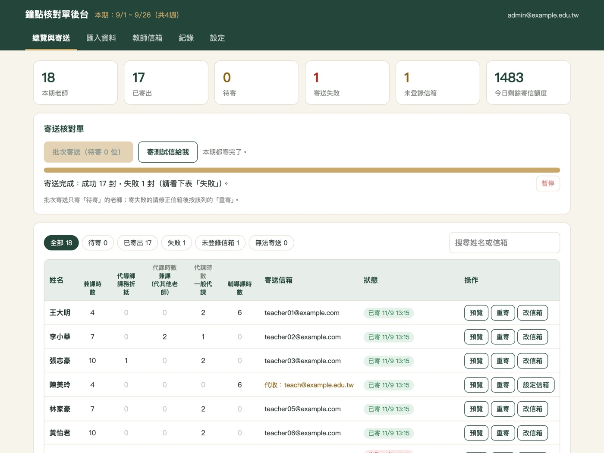
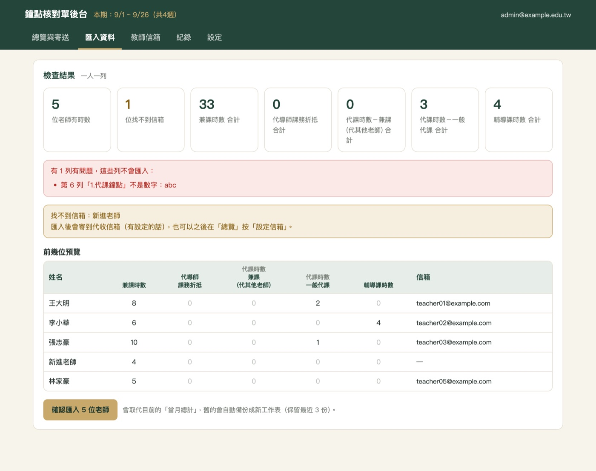
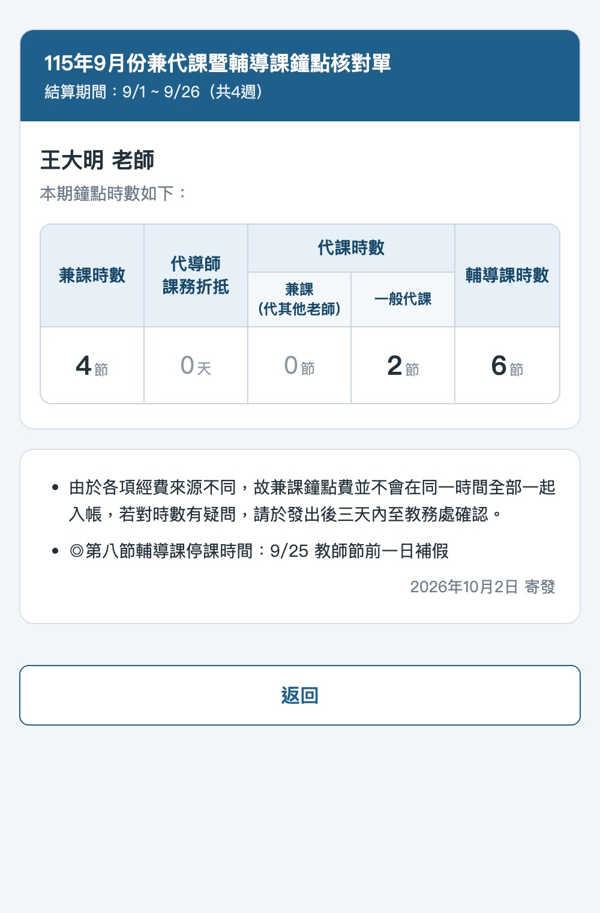

寄送前
每位老師的信，寄之前都能先看
按「預覽」就看到老師會收到的內容，收件人與主旨也一起列出來。確認沒問題，再寄一封測試信給自己。
- 表格版面跟紙本核對單一樣
- 注意事項、寄發日期在後台就能改
- 測試信不會記入寄送紀錄
第一次設定好核對項目與老師信箱，之後每月只要換資料、按寄出。
上傳 CSV，或從 Excel 直接複製貼上。
填結算期間、寄發日期與注意事項。
看每位老師的信，先寄一封給自己。
一鍵寄給所有老師，進度即時顯示。
老師用姓名＋信箱，隨時查自己的時數。
教學組最在意的「有沒有寄對、有沒有寄到」，都放在同一個畫面。
按「預覽」就看到老師會收到的內容，收件人與主旨也一起列出來。確認沒問題，再寄一封測試信給自己。

寄送進度即時顯示，可以隨時暫停。寄失敗的老師會標紅色並寫出原因，改好信箱按「重寄」就好。

一位老師一列、或一筆時數一列都可以，系統會自動加總。匯入前先列出人數、各項合計與有問題的列，確認後才寫入。

信裡有「線上查詢」按鈕，老師輸入姓名和收信的信箱就能看到本期時數，不用再跑教務處問。
系統裝在學校的 Google 試算表，資料不經過第三方主機。
教學組同仁都能用自己的 Google 帳號登入後台。
寄送、老師查詢、後台操作，誰在什麼時候做了什麼都查得到。
兼課、代課、輔導課、代導師折抵……名稱、單位、合併表頭都能改。
習慣自己整理「當月總計」也可以，系統直接讀取。
不想開後台時，在試算表上方選單也能寄測試信與批次寄送。
不用。系統裝在學校自己的 Google 試算表裡，用瀏覽器打開後台網址就能操作，電腦、平板都可以。
全部存在學校自己的 Google 試算表，信也是從學校的 Google 帳號寄出，阿珀不會經手任何資料。
依 Google 的規定，一般 Gmail 帳號一天 100 封，學校的 Google Workspace 帳號一天 1,500 封。額度用完系統會自動停下來，隔天再按一次「批次寄送」就會從沒寄到的老師接著寄。
可以設定一個「代收信箱」，沒登記信箱的老師會寄到這裡，主旨標「請轉交」。也可以在後台直接幫老師補上信箱。
可以。後台「設定 → 核對項目」可以自由新增、改名、調整順序，也能設定哪些項目要合併在同一個表頭底下。
上傳 CSV 檔，或從 Excel 選取儲存格直接複製貼上。支援「一位老師一列」與「一筆時數一列」兩種格式，匯入前會先檢查並列出有問題的地方。